Vasija Raíz
Una silueta orgánica en tonos de tierra, hecha para dar calidez a cualquier rincón.
$850 MXNTERRA KÓRA es una empresa reconocida por ofrecer piezas artesanales de alta calidad, exclusivas y cuidadosamente seleccionadas para quienes valoran la originalidad y la distinción. Nuestro catálogo combina diseños personalizados con propuestas creadas por talentosos artesanos, brindando soluciones únicas que reflejan estilo, elegancia y autenticidad en cada detalle.
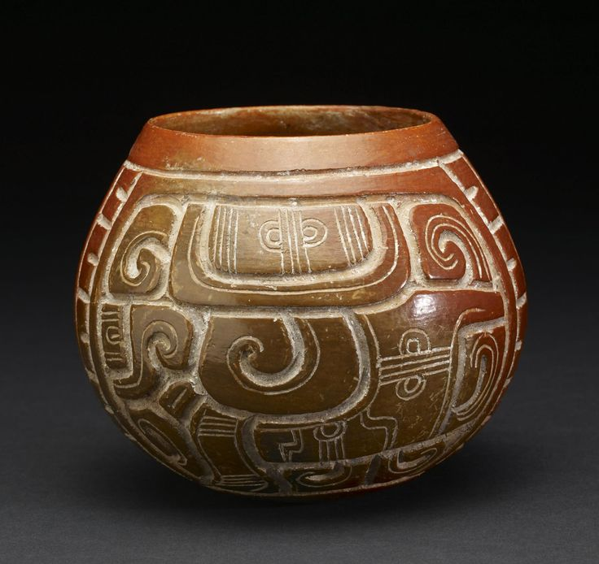
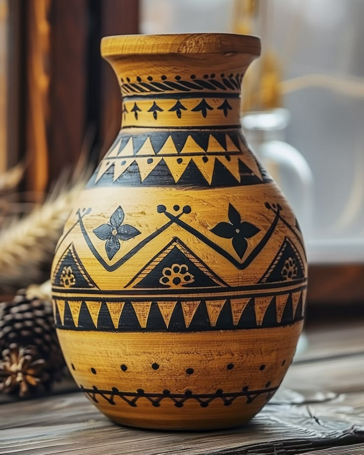
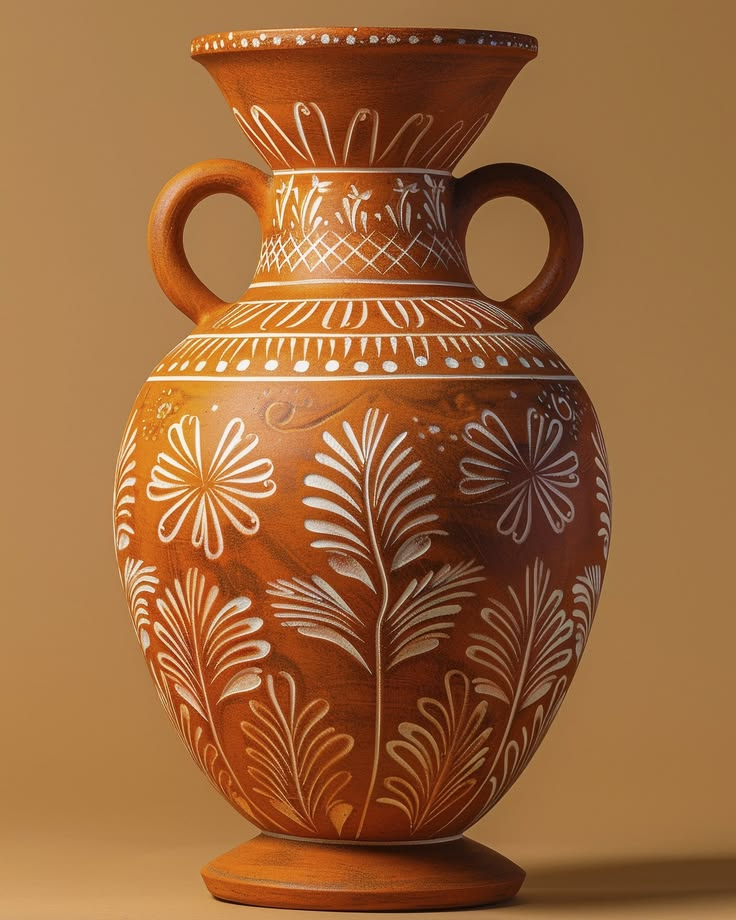
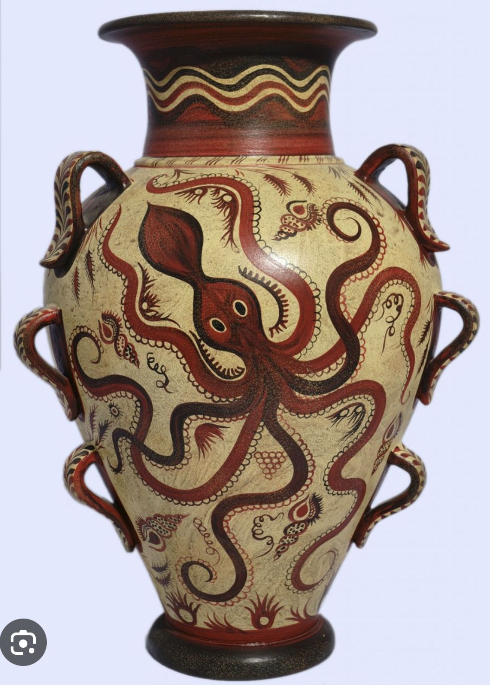
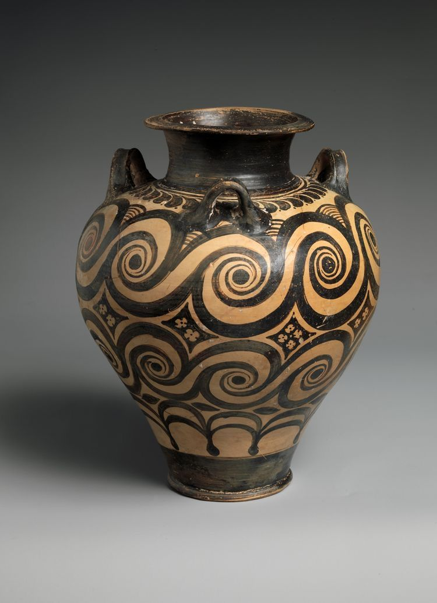
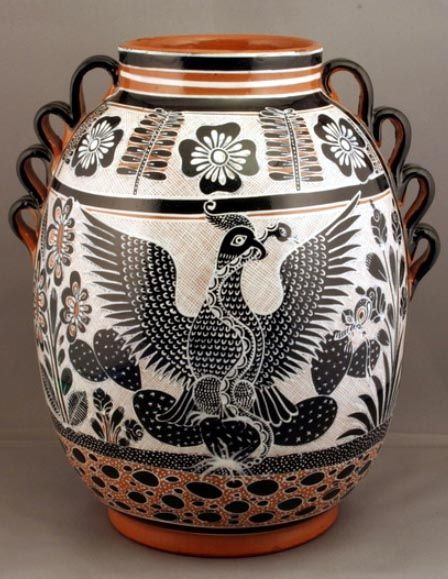
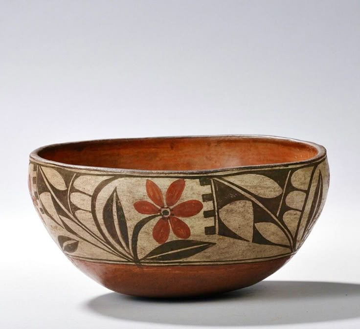
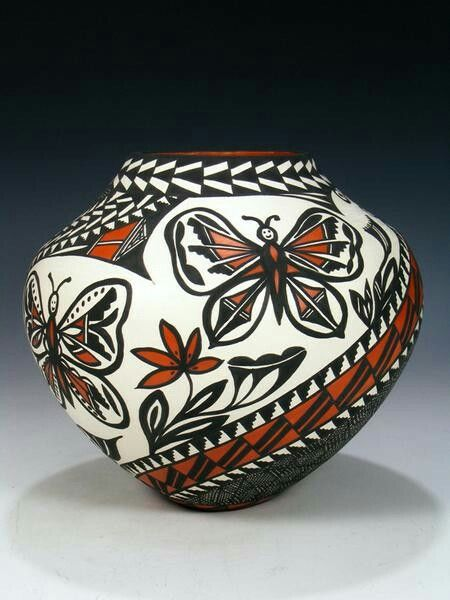
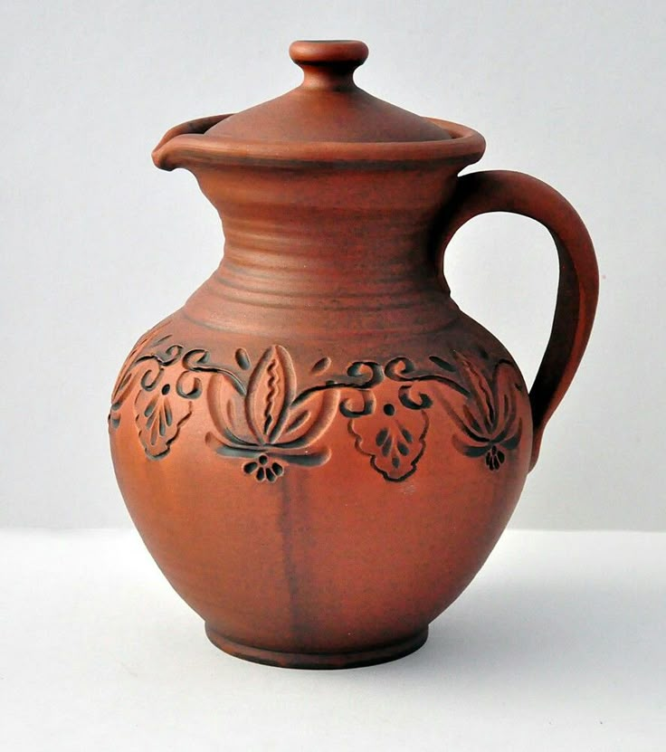
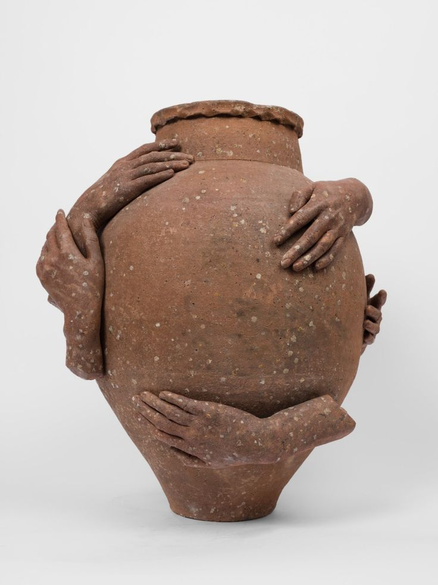
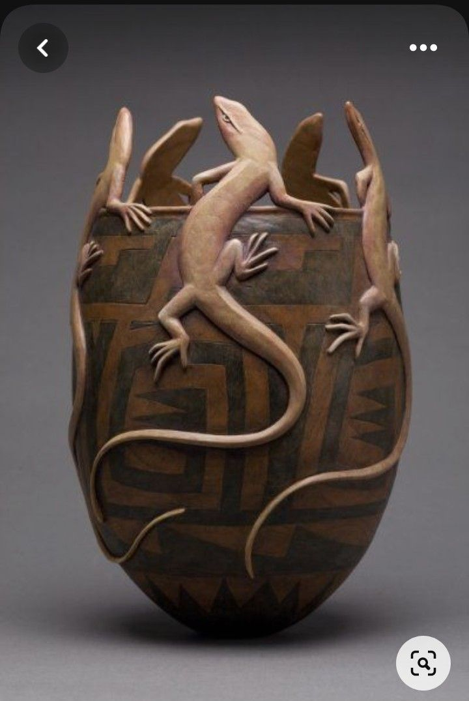
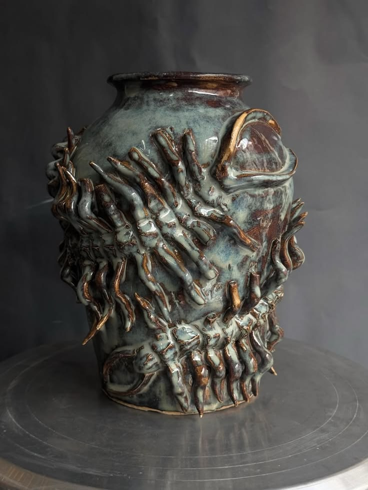
.jpg)
Hecho a mano, pieza por pieza
Cada pieza nace de la tierra y de las manos de nuestros artesanos. La arcilla se moldea con cuidado, se deja secar y se transforma en el horno; después, los acabados y detalles hacen que cada creación sea única.
Celebramos las pequeñas variaciones del trabajo manual: ninguna vasija es igual a otra, y en cada una permanece la huella de quien la creó.
Colección Terra Kóra
Cerámica artesanal que reúne formas, texturas y carácter.
Una silueta orgánica en tonos de tierra, hecha para dar calidez a cualquier rincón.
$850 MXNDiseño sereno y acabado natural para acompañar flores o lucir por sí solo.
$920 MXNUna pieza con presencia, moldeada a mano y terminada con detalles únicos.
$780 MXNTextura cálida y forma sencilla que combina con espacios contemporáneos.
$640 MXNUna creación artesanal de líneas suaves que celebra la belleza del barro.
$1,050 MXNSu forma equilibrada aporta un acento artesanal y atemporal a tu hogar.
$890 MXNUna pieza decorativa con carácter, elaborada y acabada a mano.
$720 MXNInspirada en las formas de la naturaleza, ideal para vestir una repisa o mesa.
$980 MXNUna forma elegante y sencilla que deja hablar a la textura de la cerámica.
$1,120 MXNEl encanto de lo imperfecto en una pieza versátil para decorar tu espacio.
$590 MXNCreada en pequeños lotes, con matices que hacen irrepetible cada acabado.
$870 MXNUna pieza escultórica que suma textura y personalidad a cualquier ambiente.
$1,190 MXN